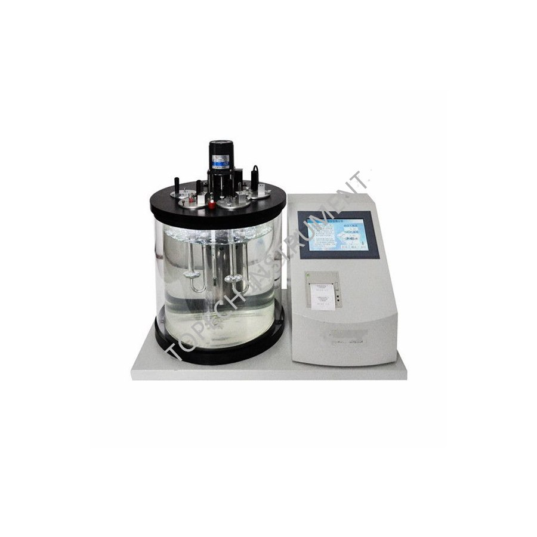

| Standards | GB 265-88, GB 1814, ASTM D445, IP 71 |
|---|---|
| Control | Advanced SCM, intelligent temperature control |
| Display | Large color LCD with English operation menu |
| Viscosity Coverage | High-viscosity and low-viscosity oils (modular technology) |
| Sample Positions | 4 viscometers simultaneously |
| Bath | 10 L homeothermic bathtub with organic glass stay-warm case |
| Heater | Stainless steel, anti-corrosion; ring-type daylight lamp for observation |
| Viscometer Clamp | Three-point vertical type, reliable grasp |
| Automation | Auto timing, calculation, average, printing and storage |
| Status Indication | Regular display of temperature, time and parameters |
One instrument covers light fuels to heavy gear oils thanks to modular high / low viscosity design.
Automatic calculation, printing and memory deliver traceable viscosity records for audits.
Four simultaneous positions speed up comparison of production batches.
Standard-compliant results for certification bodies and third-party inspection.
Buy straight from the manufacturer. Competitive wholesale pricing for distributors, labs and bulk orders — OEM labeling available.
Designed and tested against ASTM, GB/T, SH/T and ISO methods for reliable, repeatable oil product quality assurance.
Export-grade wooden case packaging with worldwide delivery via air / sea freight. Sample units ship within 3–5 business days.
Operation manuals, test videos and remote engineering support for the entire product lifecycle from our technical team.